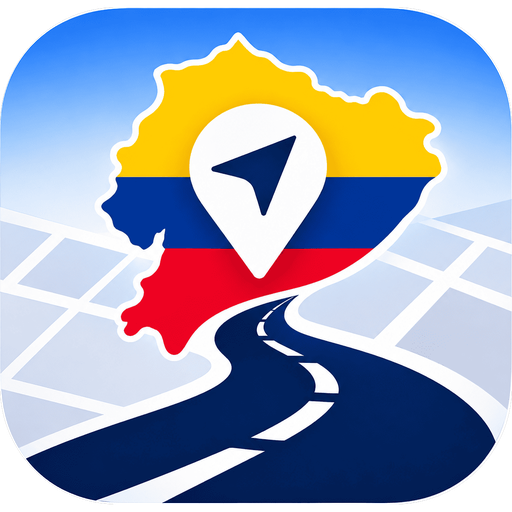

GPS 593Ajustes
Apariencia
Navegación
Guía por voz
Mantener la pantalla encendida
Alerta de velocidad
Sin conexión
Mapa
Rutas y búsqueda
Recordar los archivos en este dispositivo
Mis lugares
Acerca de
GPS 593 · sin anuncios ni rastreo en segundo plano · mapas © OpenStreetMap